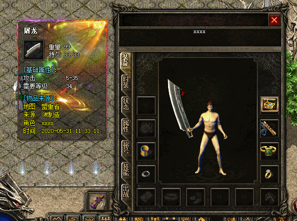
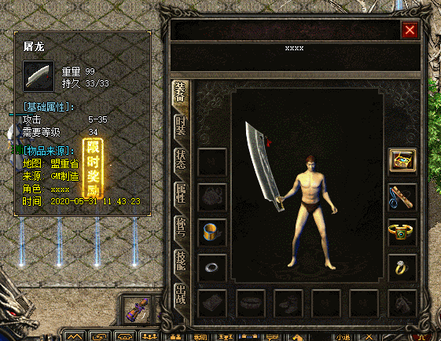
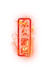
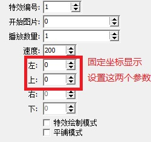
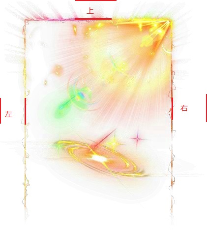
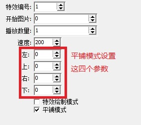

装备框 悬浮框 背景特效
1.引擎-选项-客户端设置-装备悬浮框背景特效 添加好特效
2.然后使用脚本命令SETSHOWITEMWINDOWEFFECTINDEX 把编辑好的特效设置到装备上
SETSHOWITEMWINDOWEFFECTINDEX 装备位置(0~28或30~47，-1表示OK框物品) 特效编号(在引擎上装备悬浮框背景特效里面编辑好的编号，如果设置成0表示删除特效,设置后特效编号会保存到人物数据库里) 特效位置(0~2,每个装备可以设置3个特效)


不勾选平铺模式时，图片会按照设置的坐标固定显示


勾选平铺模式时，图片会自动缩放绘制在整个装备悬浮框上，
如果图片周围有空图片，需要设置空白的宽度对齐

